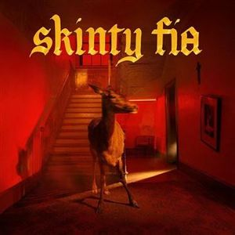
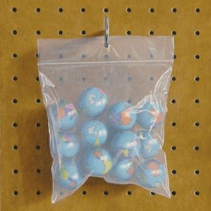
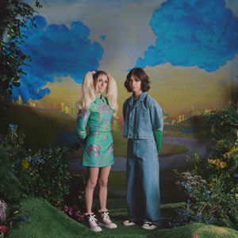

Musique
La musique est un art et une activité culturelle consistant à combiner sons et silences au cours du temps.
Alors voici quelques sons suivis par Romain Lanery ...
Father Time
Morceau de Kendrick Lamar et Sampha
L'Enfer
Morceau de Stromae

I Love You
Morceau de Fontaines D.C.

Snow Globes
Morceau de Black Country, New Road

Take A Chance
Morceau de DOMi & JD BECK et Anderson Paak